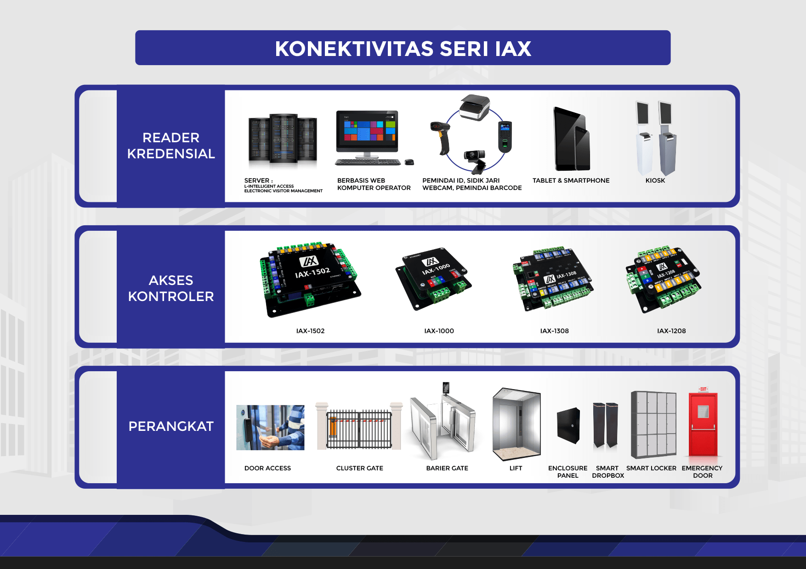
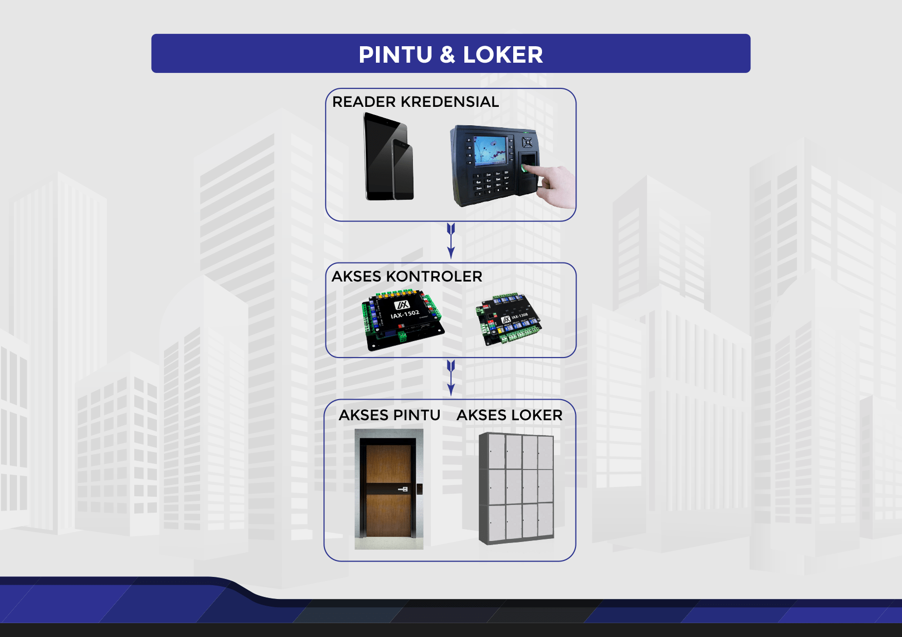
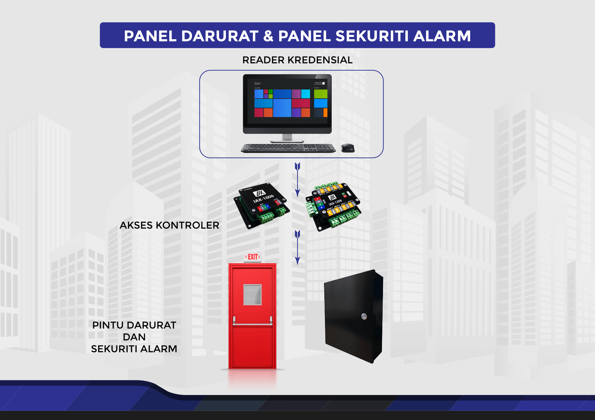

Seri IAX
IAX Seri membawa IAX-1502 sebagai kontroler berbasis network yang dapat mengendalikan satu sampai dua buah reader. IAX-1502 memiliki dimensi yang kecil sehingga mudah untuk dipasang. Tidak hanya ukurannya yang ringkas, IAX-1502 mempunyai kinerja yang tinggi dan mampu menyimpan hingga 1.000.000 kredensial pada moda mandiri atau tidak terkoneksi dengan jaringan. IAX-1502 juga mempunyai fleksibilitas yang tinggi dan dapat mendukung reader berteknologi RFID, magnetic stripe, biometrik (sidik jari, wajah dan iris mata), kode PIN, kode QR dan juga reader berteknologi Bluetooth dan NFC. Kontroler IAX-1502 ini juga dilengkapi dengan antarmuka IA-BUS untuk penambahan kontak masukan dan relay keluaran jika dibutuhkan.
Network Kontroler Untuk Dua Akses Reader
IAX-1502 adalah kontroler berbasis network yang dapat mengendalikan dua buah akses reader. Kontroler ini memiliki ukuran yang kecil dan ringkas sehingga dapat dipasang dengan mudah. IAX-1502 cocok digunakan untuk mengendalikan dua buah pintu dengan konfifigurasi reader tunggal atau dapat digunakan untuk mengendalikan satu buah pintu dengan konfifigurasi reader ganda.
Kontroler ini menawarkan fleksibilitas yang tinggi dan dapat mendukung reader berteknologi RFID, magnetic stripe, biometrik (sidik jari, wajah dan iris mata), kode PIN, kode QR dan juga reader berteknologi Bluetooth dan NFC.

Network Kontroler Induk Untuk Kontak & Relay
IAX-1000 adalah kontroler induk mempunyai IA-BUS antarmuka dan dapat digunakan untuk mengendalikan 8 buah kontroler IAX-1208 atau 8 buah kontroler IAX-1308. Jumlah IAX-1000 yang dapat dikendalikan oleh satu buah aplikasi perangkat lunak adalah tidak terbatas. Hal ini membuat sistem IAX-1000 dapat digunakan dari sistem kecil misalnya untuk memantau beberapa kontak masukan hingga sistem yang besar misalnya untuk memantau ribuan kontak masukan sekaligus mengendalikan ribuan relay kontak kering.

Kontroler Anak untuk Kontak Masukan
IAX-1208 adalah kontroler anak yang memiliki 8 buah masukan kontak kering. Kontak kering pada umumnya digunakan sebagai keluaran dari sensor. Misalnya sensor untuk mendeteksi apakah kondisi sebuah pintu sedang ditutup atau terbuka. Kontroler ini memiliki sebuah IA-BUS antarmuka yang dapat dihubungkan dengan kontroler induk seperti IAX-1000 atau IAX-1502. Sebuah IA-BUS antarmuka dapat mendukung sampai dengan 8 buah kontroler anak.

Kontroler Anak Untuk Relay Keluaran
IAX-1308 adalah kontroler anak yang memiliki 8 buah relay kontak kering. Relay kontak kering pada umumnya digunakan sebagai saklar untuk mengaktifkan atau mematikan alat elektronik dengan cara menghubungkan atau memutuskan aliran listrik. Relay kontak kering misalnya dapat digunakan untuk mengalirkan atau memutuskan aliran listrik ke kunci elektronik sehingga kita dapat mengunci atau membuka sebuah pintu yang menggunakan kunci elektronik.
Kontroler ini memiliki sebuah IA-BUS antarmuka yang dapat dihubungkan dengan kontroler induk seperti IAX-1000 atau IAX-1502. Sebuah IA-BUS antarmuka dapat mendukung sampai dengan 8 buah kontroler anak.

Untuk selengkapnya unduh file PDF
Implementasi Produk IAX
Produk IAX dapat diimplementasikan pada perangkat yang membutuhkan akses sekuriti seperti pintu akses, speed gate, elevator konvensional, elevator CDS, pintu darurat, loker, panel sekuriti alarm, gerbang cluster.
Kontroler Akses Pintu dan Loker
Produk IAX dapat diaplikasikan pada pintu atau loker dalam gedung kantor / sekolah / rumah sakit / apartemen berdasarkan kredensial biometrik sidik jari, wajah, kartu akses, PIN atau QR code atau bisa juga menggunakan akses perangkat lunak dari tablet ataupun ponsel pintar.
Kontroler Akses Elevator
Produk IAX dapat diaplikasikan pada elevator gedung kantor atau apartemen, IAX dapat mendukung elevator konvensional yang memakai akses tombol dalam elevator ataupun elevator CDS yang memakai akses tombol dari lobi lantai. IAX seri dapat dihubungkan dengan sistem penerimaan tamu di lobi gedung kantor ataupun apartemen untuk membuat sistem sekuriti lebih efisien.

Kontroler Akses Barrier Gate dan Smart Drop Box
Produk IAX dapat diaplikasikan pada sistem speed gate dan drop box di gedung kantor yang terhubung dengan sistem penerimaan tamu yang dapat berupa kiosk atau komputer operator atau website dan aplikasi ponsel pintar.

Kontroler Pintu Darurat
Produk IAX dapat juga digunakan sebagai penerima input status / sinyal dari pintu darurat ataupun panel sekuriti alarm yang nantinya akan dikirimkan sebagai laporan / log ke sistem sekuriti yang bersangkutan.
